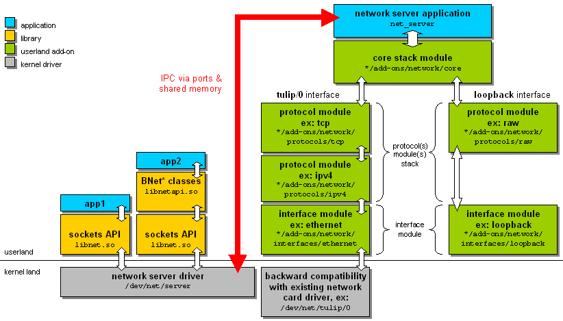

For debugging purpose, and eventually stack internals learning purpose, we have develop an userland stack version, sharing most of the network stack source code but hosted by a app, net_stack_tester, in contrast with the real one hosted in kernelland, behind the stack driver.
The following image shows this debug platform overall design:
The libnet.so library was modified to check if the NET_STACK_DRIVER_PATH environment variable is defined and use his value as driver path to interface with. To switch to net_stack_tester hosted stack version, just run this from a Terminal:
| $ export NET_STACK_DRIVER_PATH=/dev/net/server |
Starting from there, all apps using libnet.so services will use the debug stack version.